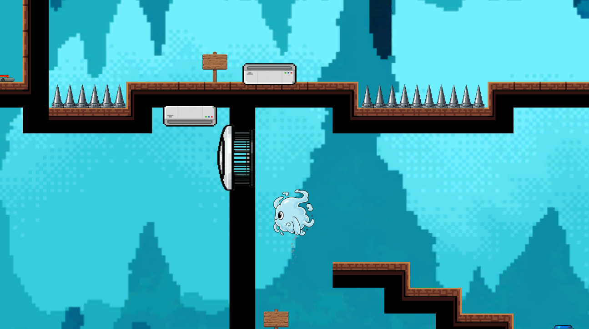

2026 - L'eau dans tous ses etats

Description
Serious game pédagogique autour de l'eau, de ses transformations et de ses usages. Le projet met en scène des situations intéractives pour comprendre les différents états de l'eau et leur impact dans le quotidien.
Points clés
- Approche ludique et éducative
- Contenus centrés sur les différents états de l'eau
- Mise en situation interactive